Illustrator: Balance
Design Studies 120 Class Project Manual
Introduction
Project Description
For the first part of your project, you will be creating a design using three different shapes, each of which appears in three different size variations. Students must redraw their design digitally using Illustrator, then rearrange the design on a second artboard.
For more details about the project, see the handout provided by your instructor.
Class Files
In the class files folder, there are a number of resources which may be useful, including a scanned design, example projects, and tutorial files we will use along the way.
Creating a New Document
-
Open Illustrator CC.
-
Navigate to File > New
-
Once the New Document dialogue box appears, hit the More Options button in the bottom right and set the options to the following:
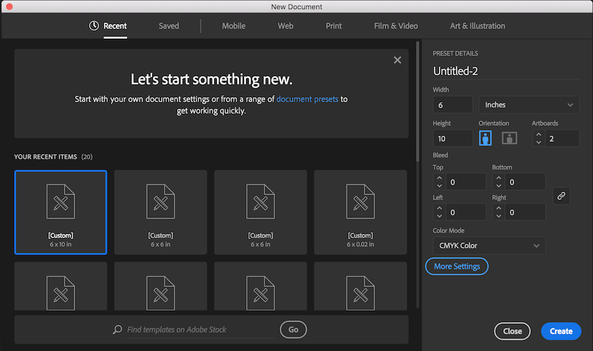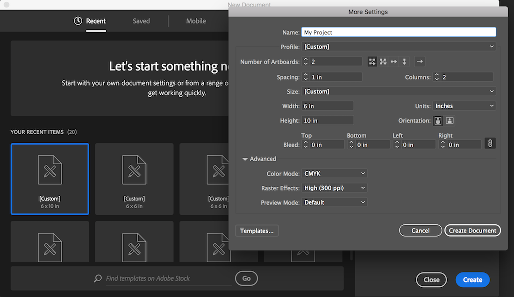
The Illustrator Interface
Application Frame Mode
In Mac OS, the Illustrator interface behaves differently than in Windows. In Windows, documents, menus, toolbars, etc, are grouped together inside one window, but, in Mac OS, documents float freely from other components and can be maximized/minimized independently of the application itself.
Mac OS users who prefer the Windows approach can mimic it by using Application Frame mode. To turn on Application Frame mode, go to Window > Application Frame.
Using Pre-Defined Workspace Layouts
Illustrator offers so many features that the Workspace can quickly become cluttered. To simplify things, we’ll use one of Illustrator’s pre-defined combinations of panels and menus, which are known as Workspace Layouts.
In the upper-right corner of the window, set the drop-down menu to Essentials. This gives us a basic set of tools and panels.
The resulting interface should look like the following image, with the Document Window, Application Bar, Tools Panel, Control Bar and Panel Dock displayed. These items are discussed on the next few pages.
Control Panel Not Appearing?
As of Illustrator 2018, the Control Panel strip at the top of the screen is off by default.
To enable this feature for easier access to alignment and fill/stroke tools, go to Window > Control
Common Interface Components
The Document Window displays the file that you are currently working on. If you have multiple files open, each file appears as a tab in the Document Window, as shown below. The white rectangle inside the Document Window, which displays the printable area of the Workspace, is called the Artboard.
The Application Bar contains the Workspace Switcher menu and a shortcut to Adobe Bridge, an application used for image management. On Windows machines, the Application Bar also contains the File, Edit, View, etc menus.
The Tools Panel contains tools used to create and manipulate artwork. To select a tool, simply click it. Tools with a triangle in the lower-right corner have additional tools hidden beneath them. To display hidden tools, click and hold a tool icon; a drop-down menu showing the hidden tools will appear.
The Control Panel displays options for the currently selected tool. Control Bar options are generally a small subset of those available in other panels and menus. Keep in mind that there may be additional options for your selected tool beyond those displayed in the Control Bar.
The Panels Dock. Panels are menus that allow you to monitor and modify your artwork. By default, all Panels are closed and hidden beneath icons in the Panel Dock. Icons in the Panel Dock represent groups of related Panels; to open a Panel Group, click an icon in the Panel Dock. Each Panel within a Panel Group is displayed on a separate tab. To bring a Panel to the front of the group, click its tab. To close a Panel group, click the double arrows in the upper-right corner of the Panel Group. Panels can also be displayed individually. To show a panel, go to the Window menu and Click its name. To hide the panel, go to the Window menu and Click the panel name again.
Navigating the Workspace
Working in Illustrator often involves moving around the workspace in order to focus on different portions of your project. In this section, we discuss a few methods of navigating the workspace.
Selection Tool
Selection Tool
Use this tool to select, move, resize, rotate, etc. entire objects or groups of objects.
Select multiple objects by holding Shift and clicking each additional object, or by clicking and dragging a box around the objects you'd like to select.
Shortcut: V
-
In the Tools Panel, Click the Selection Tool
-
Click on any object in the Artboard. A box with control points appears to indicate an object is selected.
-
Hold down Shift and Click to select multiple objects
Direct Selection Tool
Direct Selection Tool:
Use this tool to select individual anchor points within a shape.
Select individual anchor points or path segments by clicking on them, or select an entire path or group by selecting any other spot on the item.
Select multiple anchor points by holding Shift and clicking each additional point, or by dragging a box around all points you'd like to select.
Shortcut: A
-
In the Tools Panel, Click the Direct Selection Tool
-
Click on an object on the Artboard
-
Click on an anchor point and drag
-
Click on a path and drag
Zoom Tool
Zoom Tool:
The Zoom Tool lets you zoom in or zoom out to increase or decrease the document display size.
Quickly zoom with any tool by holding Alt/Option and scrolling with the mouse/trackpad or by hitting Ctrl/Command and +/-
To fit the current artboard within the current window:Ctrl/Command + 0
Shortcut: Z
-
In the Tools Panel, Click the Zoom Tool.
-
To zoom in, Click in the Document Window. You can also use keyboard shortcut Ctrl/Command + +
-
To zoom out, Hold the Alt/Option key while clicking in the Document Window. You can also use keyboard shortcut Ctrl/Command + -
Hand Tool
Hand Tool:
Used to move around the Artboard when the document is zoomed in beyond the workspace.
Shortcut: Hold Spacebar while dragging with the mouse.
-
Zoom in on Artboard so it extends beyond the Workspace
-
In the Tools Panel, Click the Hand Tool.
-
To pan around the Artboard, Click and Drag in the Document Window.
Navigator Panel
Navigator Panel:
The Navigator Panel allows you to see where you are in your current document, and can also be used to pan and zoom. To open the Navigator Panel, go to Window > Navigator
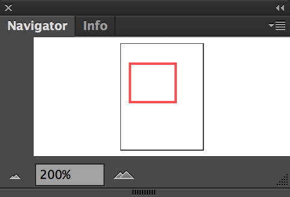
Preparing Your Document
Adding a Border
Before placing our image, we will first add a border to both artboards so that we can see the artboard’s edge after printing.
-
Click on the Rectangle tool.
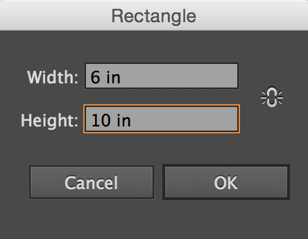
-
Click once in the artboard, and specify the dimensions of the rectangle as 6 inches width and 10 inches height.
-
Change the stroke to black and the fill to none.
-
Make sure the stroke width is set at 1 pt.
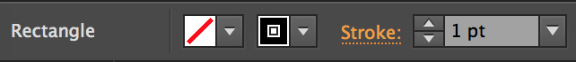
-
Position the rectangle so it outlines the artboard. Copy and paste this rectangle in the second artboard and position it to outline this artboard.
Placing an Image
Placing an image in Illustrator is a good way to begin making a vector version of a drawn design. Placing an image is different than pasting. It creates a link back to the image file. You must keep the image in the same place or embed the image to ensure you don’t lose it. The students should be prepared with a scanned image of their design. If they do not have a design with them, they can place the class file MyDesign.jpeg.
-
File > Place…select your file. (Instructors will use MyDesign.jpeg)
-
Click Embed in the Control Panel to add the image to the Illustrator file.
-
Drag your image into the desired location with the Selection Tool.
-
Resize by clicking on a white anchor point in the corners of the image and dragging outward or inward.
Using Clipping Masks to Crop
Illustrator does not feature a crop tool, so if you need to crop your image in any way you will have to use a clipping mask.
-
Using the Rectangle tool, draw a rectangle with no stroke and no fill over top of your image, specifically over the area you want to cut out of your image. When you use the clipping mask, it will remove all parts of the image that are not covered by this rectangle.
-
Select both the image and the rectangle at the same time by holding down Shift and clicking on each.
-
Go to Object > Clipping Mask > Make.
Opacity
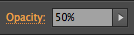
Turning down the opacity of our image will help us be able to trace it more easily, the same way one would used tracing paper to trace an image. With the image selected, navigate to the Control Panel and where it says Opacity 100%, enter in a value around 50% and click enter.
Locking
To lock the object, select your placed image by clicking on it with the Selection Tool, then navigate to Object > Lock > Selection.You can also do this in your layers panel by finding the layer you are on and clicking in the lock box to toggle the lock layer feature.
To Unlock, navigate to Object > Unlock all, or find the shape in layers panel and unlock by clicking on the lock icon.
We will work on your image later on in class, after you learn some tools.
Copying and Resizing Shapes
Now we will work with creating shapes in a variety of ways. Begin by opening the practice class file by going to File > Open and choosing shapes.ai
Instructions for shapes are also available in the shapes.ai file, and these exercises correspond with Video 1.
Using the Layers panel
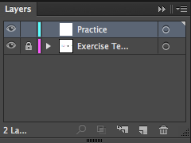
-
Open Layers Panel. Also found under Window > Layers
-
Lock the Exercise Template Layer.
-
Click the eyeball to toggle the visibility, then toggle it back on, for practice.
-
Click the Practice layer.
Grids and Rulers
Grids and rulers are essential tools for precision drawing, copying, resizing, rotating and reflecting objects effectively.
Exercise: Drawing a Circle
-
Select ellipse tool (under rectangle) in the Tools Panel
-
Click and drag to draw a circle anywhere. Hold shift to make it a perfect circle when you are dragging it out.
-
With the circle still selected change the stroke to none and the fill to black in the Control Panel.
-
Move it over the smaller blue circle to the left in the first shapes.ai artboard, and resize it to fit exactly by using the black arrow selection tool and dragging the anchor points out while holding down shift.
-
To create a circle from the center, hold the Alt/Option key while dragging out a circle.
Exercise: Copying and Resizing
-
Copy the circle you drew (Edit > Copy) and paste (Edit > Paste)
-
Using the black arrow selection tool, move it over the next largest circle.
-
Hold down shift to constrain proportions and resize the circle by clicking on a corner port (white square) and dragging out. Hold down shift until after you finish resizing.
Repeat these two exercises with the rectangle tool and the next shapes.ai set of shapes.
Option-Drag Copying
This is the fastest and most many times most effective way of copying. Take time to learn and practice this technique! Make a copy by first clicking and dragging a circle you made over the last circle in the template. Before letting go of your mouse, hold down Alt/Option. You’ll see your arrow tool change to a double arrow indicating you're making a copy. Let go of the mouse, then let go of Alt/Option. Resize your shape again, practice using both Shift and Alt/Option to resize. Repeat with Rectangle.
Triangle
The triangle shape is made using the polygon tool.
-
Choose the polygon tool.
-
Click once anywhere on your document and a dialogue box will appear.
-
Enter 3 sides and disregard the size because we can resize our triangle with the Selection Tool.
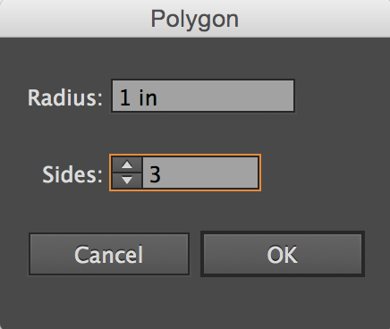
-
You can manipulate the shape of the triangle using the direct selection tool and selecting the anchor points around the object.
Transforming Shapes with Anchor Points
Follow the directions in the Shapes.ai file
The Pen Tool
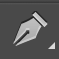
-
Select the Pen tool from the tool panel.
-
Change fill to none and stroke to any color. (You can change the color at any point, but it’s helpful to have a distinctly different color when tracing).
-
Click once to lay down an anchor point. Do not click and drag (unless you are VERY comfortable already with the pen tool). Roughly lay down anchor points along the line.
-
Then use the Anchor Point tool to click and drag handles from an anchor point to create a curve.
Use the template in shapes.ai to practice!
Open Path
When you are finished with your open path like a line or an arrow, simply click on the selection tool in the tools panel and you will notice that your path has become a line.
To close a path, hover your pen tool cursor over the first anchor point you laid and your pen tool cursor icon will show a small circle next to it, meaning that once you click on the original beginning anchor point, you will have closed the path.
Challenge
First make sure your fill is set to none. Then trace the Swish Star laying down the anchor points, then going back to curve the lines using the Convert Anchor Point Tool.
Rotation and Reflection
Follow the directions in Shapes.ai (fourth artboard)
Exercise: Using the Rotate Tool
-
Select the object you would like to rotate.
-
Select the Rotate tool from the toolbar.
-
Click on the object and drag the cursor to rotate the object.
-
You can also copy and rotate around a fixed point, as in the shapes.ai file.
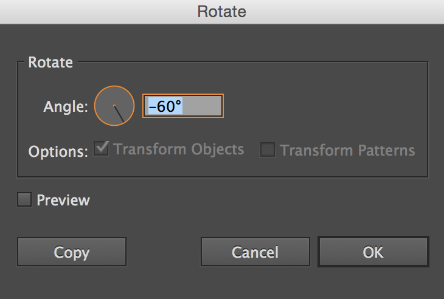
-
To do this, select the object you would like to rotate.
-
Select the Rotate tool from the toolbar.
-
Hold down Alt/Option and click once to set a rotation point.
-
A dialogue box will appear. Set the rotation degrees to whatever you would like.
-
Click Copy.
Exercise: Using the Reflection Tool
-
Select the object you would like to reflect.
-
Select the Reflect tool from the toolbar.
-
Set a reflection center point by holding down Alt/Option and clicking once.
-
A dialogue box will appear. Set the reflection degrees to whatever you would like.
-
Click copy.
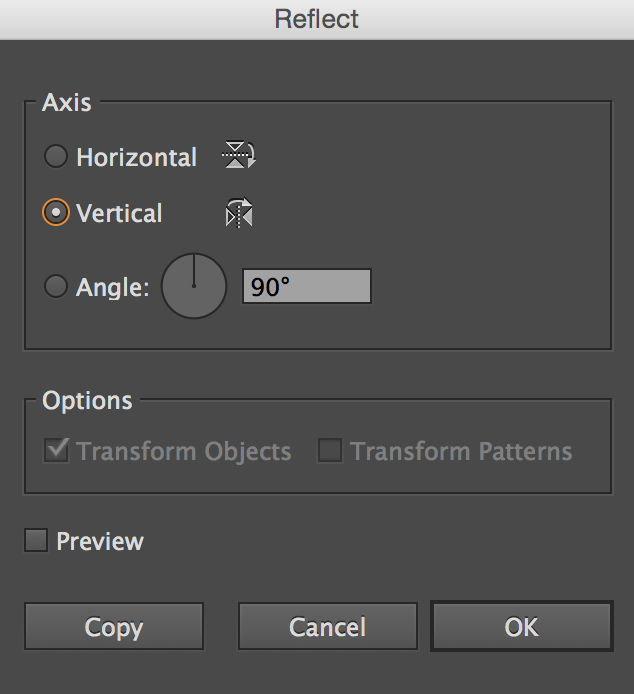
Saving and Exporting
Saving as an Illustrator Document
File > Save As… .ai (Adobe Illustrator) file will ensure the file will be a workable file. This means that whatever is on your pasteboard and the art board will be saved, along with all of the layers. You can always go back and edit an Adobe Illustrator file. You can print straight from an .ai file. File > Print…
Saving as a PDF
File > Save As … .pfd (Adobe Portable Document Format). This will essentially flatten your image and make it so you cannot edit it. This is a good format to email, or print from.
Saving as a JPEG
File > Export. jpg (JPEG) this will compress your image and make it a smaller file. Usually a good file format to put things on the internet.
Optional: Pathfinder
Pathfinder is a tool used to merge/create shapes by combining existing shapes. If you would like to learn about pathfinder and how it is used, follow the instructions found in Pathfinder.ai. To get to the main pathfinder window, navigate to Window > Pathfinder in the menu bar.
This exercise is optional, and to be explored on your own.
Follow directions in Pathfinder.ai file. To get to the Pathfinder window, go to Window > Pathfinder